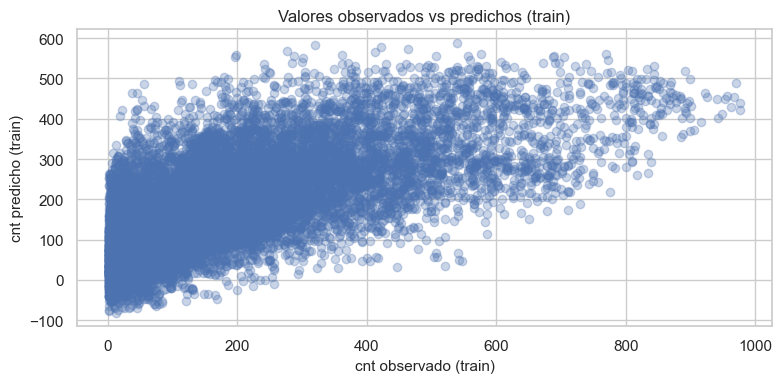
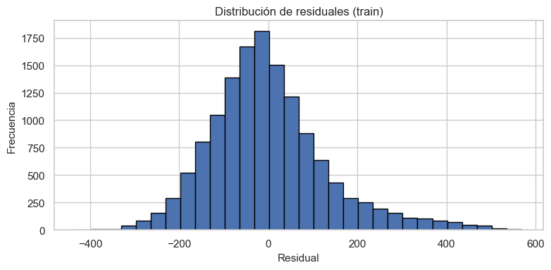

Capítulo 3 – Modelo Base de Regresión Lineal Múltiple#
Sistema de Bicicletas Compartidas – Dataset hour_prepared.csv#
En este capítulo ajustamos un primer modelo base de regresión lineal múltiple para explicar la demanda horaria de bicicletas (cnt) a partir de las variables preparadas en el Capítulo 2.
Trabajaremos con el dataset ya transformado y con variables dummies, almacenado en ../data/hour_prepared.csv.
1. Carga de librerías y datos#
Cargamos el dataset preparado y separamos la variable objetivo cnt de los predictores.
import pandas as pd
import numpy as np
import matplotlib.pyplot as plt
import seaborn as sns
import statsmodels.api as sm
from sklearn.model_selection import train_test_split
from sklearn.metrics import mean_squared_error, r2_score
sns.set(style="whitegrid")
plt.rcParams["figure.figsize"] = (8, 4)
plt.rcParams["axes.titlesize"] = 12
plt.rcParams["axes.labelsize"] = 11
# Carga del dataset preparado
data_path = "../data/hour_prepared.csv"
df_model = pd.read_csv(data_path)
df_model.head()
| temp | atemp | hum | windspeed | peak_hour | hr_1 | hr_2 | hr_3 | hr_4 | hr_5 | ... | weekday_6 | workingday_1 | season_2 | season_3 | season_4 | yr_1 | weathersit_2 | weathersit_3 | weathersit_4 | cnt | |
|---|---|---|---|---|---|---|---|---|---|---|---|---|---|---|---|---|---|---|---|---|---|
| 0 | 0.24 | 0.2879 | 0.81 | 0.0 | 0 | False | False | False | False | False | ... | True | False | False | False | False | False | False | False | False | 16 |
| 1 | 0.22 | 0.2727 | 0.80 | 0.0 | 0 | True | False | False | False | False | ... | True | False | False | False | False | False | False | False | False | 40 |
| 2 | 0.22 | 0.2727 | 0.80 | 0.0 | 0 | False | True | False | False | False | ... | True | False | False | False | False | False | False | False | False | 32 |
| 3 | 0.24 | 0.2879 | 0.75 | 0.0 | 0 | False | False | True | False | False | ... | True | False | False | False | False | False | False | False | False | 13 |
| 4 | 0.24 | 0.2879 | 0.75 | 0.0 | 0 | False | False | False | True | False | ... | True | False | False | False | False | False | False | False | False | 1 |
5 rows × 43 columns
Verificamos dimensiones y presencia de valores faltantes:
df_model.shape
(17379, 43)
df_model.isna().sum().sum()
np.int64(0)
2. Definición de la variable objetivo y predictores#
Definimos:
Variable objetivo:
cnt.Matriz de predictores: todas las demás columnas del dataset preparado.
target_col = "cnt"
if target_col not in df_model.columns:
raise ValueError("La columna 'cnt' no se encuentra en 'hour_prepared.csv'.")
y = df_model["cnt"].astype(float)
X = df_model.drop(columns=["cnt"])
X = X.select_dtypes(include=["number"]).astype(float)
X.dtypes.head(), y.shape
(temp float64
atemp float64
hum float64
windspeed float64
peak_hour float64
dtype: object,
(17379,))
3. Partición en conjuntos de entrenamiento y prueba#
Dividimos los datos en:
Entrenamiento: 80%
Prueba: 20%
Utilizamos una semilla fija (random_state=123) para garantizar reproducibilidad.
from sklearn.model_selection import train_test_split
import statsmodels.api as sm
X_train, X_test, y_train, y_test = train_test_split(
X, y, test_size=0.2, random_state=123
)
X_train.shape, X_test.shape
((13903, 5), (3476, 5))
4. Ajuste del modelo OLS (mínimos cuadrados ordinarios)#
Para utilizar statsmodels, añadimos un término de intercepto (const) a la matriz de diseño y ajustamos un modelo OLS sobre el conjunto de entrenamiento.
# Añadimos constante a los predictores
X_train_const = sm.add_constant(X_train, has_constant="add")
X_test_const = sm.add_constant(X_test, has_constant="add")
X_train_const.head()
| const | temp | atemp | hum | windspeed | peak_hour | |
|---|---|---|---|---|---|---|
| 2837 | 1.0 | 0.54 | 0.5152 | 0.83 | 0.2836 | 0.0 |
| 15553 | 1.0 | 0.56 | 0.5303 | 0.73 | 0.2985 | 0.0 |
| 1931 | 1.0 | 0.18 | 0.1818 | 0.55 | 0.1940 | 0.0 |
| 5233 | 1.0 | 0.74 | 0.6515 | 0.37 | 0.0896 | 0.0 |
| 11900 | 1.0 | 0.58 | 0.5455 | 0.88 | 0.1343 | 0.0 |
# Ajuste del modelo OLS en el conjunto de entrenamiento
ols = sm.OLS(y_train, X_train_const).fit()
ols.summary()
| Dep. Variable: | cnt | R-squared: | 0.452 |
|---|---|---|---|
| Model: | OLS | Adj. R-squared: | 0.452 |
| Method: | Least Squares | F-statistic: | 2293. |
| Date: | Sat, 29 Nov 2025 | Prob (F-statistic): | 0.00 |
| Time: | 02:51:24 | Log-Likelihood: | -87821. |
| No. Observations: | 13903 | AIC: | 1.757e+05 |
| Df Residuals: | 13897 | BIC: | 1.757e+05 |
| Df Model: | 5 | ||
| Covariance Type: | nonrobust |
| coef | std err | t | P>|t| | [0.025 | 0.975] | |
|---|---|---|---|---|---|---|
| const | 120.0733 | 6.250 | 19.212 | 0.000 | 107.823 | 132.324 |
| temp | 61.2861 | 40.274 | 1.522 | 0.128 | -17.656 | 140.229 |
| atemp | 340.4978 | 45.201 | 7.533 | 0.000 | 251.899 | 429.097 |
| hum | -273.4382 | 6.176 | -44.276 | 0.000 | -285.543 | -261.333 |
| windspeed | 9.5407 | 10.030 | 0.951 | 0.341 | -10.119 | 29.200 |
| peak_hour | 184.7146 | 2.622 | 70.437 | 0.000 | 179.574 | 189.855 |
| Omnibus: | 1672.276 | Durbin-Watson: | 2.033 |
|---|---|---|---|
| Prob(Omnibus): | 0.000 | Jarque-Bera (JB): | 2797.170 |
| Skew: | 0.831 | Prob(JB): | 0.00 |
| Kurtosis: | 4.438 | Cond. No. | 75.1 |
Notes:
[1] Standard Errors assume that the covariance matrix of the errors is correctly specified.
4.1. Resumen del modelo#
Mostramos el resumen estándar de statsmodels, que incluye estimaciones de coeficientes, errores estándar, valores t y p-values.
ols.summary()
| Dep. Variable: | cnt | R-squared: | 0.452 |
|---|---|---|---|
| Model: | OLS | Adj. R-squared: | 0.452 |
| Method: | Least Squares | F-statistic: | 2293. |
| Date: | Sat, 29 Nov 2025 | Prob (F-statistic): | 0.00 |
| Time: | 02:51:24 | Log-Likelihood: | -87821. |
| No. Observations: | 13903 | AIC: | 1.757e+05 |
| Df Residuals: | 13897 | BIC: | 1.757e+05 |
| Df Model: | 5 | ||
| Covariance Type: | nonrobust |
| coef | std err | t | P>|t| | [0.025 | 0.975] | |
|---|---|---|---|---|---|---|
| const | 120.0733 | 6.250 | 19.212 | 0.000 | 107.823 | 132.324 |
| temp | 61.2861 | 40.274 | 1.522 | 0.128 | -17.656 | 140.229 |
| atemp | 340.4978 | 45.201 | 7.533 | 0.000 | 251.899 | 429.097 |
| hum | -273.4382 | 6.176 | -44.276 | 0.000 | -285.543 | -261.333 |
| windspeed | 9.5407 | 10.030 | 0.951 | 0.341 | -10.119 | 29.200 |
| peak_hour | 184.7146 | 2.622 | 70.437 | 0.000 | 179.574 | 189.855 |
| Omnibus: | 1672.276 | Durbin-Watson: | 2.033 |
|---|---|---|---|
| Prob(Omnibus): | 0.000 | Jarque-Bera (JB): | 2797.170 |
| Skew: | 0.831 | Prob(JB): | 0.00 |
| Kurtosis: | 4.438 | Cond. No. | 75.1 |
Notes:
[1] Standard Errors assume that the covariance matrix of the errors is correctly specified.
4.2. Tabla de coeficientes en formato tabular#
Construimos una tabla con:
Coeficientes estimados (
coef).Errores estándar (
std err).Estadístico t (
t).Valor-p (
P>|t|).Intervalos de confianza al 95% (
IC 2.5%,IC 97.5%).
conf_int = ols.conf_int(alpha=0.05)
# Aseguramos que conf_int tenga nombres de columnas claros
conf_int.columns = ["IC 2.5%", "IC 97.5%"]
# Construimos la tabla de coeficientes como DataFrame
coef_table = pd.DataFrame({
"coef": ols.params,
"std err": ols.bse,
"t": ols.tvalues,
"P>|t|": ols.pvalues,
})
coef_table = pd.concat([coef_table, conf_int], axis=1)
coef_table.index.name = "Parámetro"
coef_table.round(4)
| coef | std err | t | P>|t| | IC 2.5% | IC 97.5% | |
|---|---|---|---|---|---|---|
| Parámetro | ||||||
| const | 120.0733 | 6.2499 | 19.2122 | 0.0000 | 107.8227 | 132.3239 |
| temp | 61.2861 | 40.2740 | 1.5217 | 0.1281 | -17.6564 | 140.2287 |
| atemp | 340.4978 | 45.2005 | 7.5331 | 0.0000 | 251.8987 | 429.0969 |
| hum | -273.4382 | 6.1757 | -44.2762 | 0.0000 | -285.5434 | -261.3329 |
| windspeed | 9.5407 | 10.0298 | 0.9512 | 0.3415 | -10.1190 | 29.2005 |
| peak_hour | 184.7146 | 2.6224 | 70.4371 | 0.0000 | 179.5743 | 189.8548 |
5. Métricas de desempeño del modelo base#
Evaluamos el modelo tanto en el conjunto de entrenamiento como en el conjunto de prueba, utilizando:
Error cuadrático medio (RMSE).
Coeficiente de determinación (R²).
# Predicciones en entrenamiento y prueba
y_pred_train = ols.predict(X_train_const)
y_pred_test = ols.predict(X_test_const)
# Cálculo de RMSE (sin usar el parámetro 'squared' para compatibilidad)
rmse_train = np.sqrt(mean_squared_error(y_train, y_pred_train))
rmse_test = np.sqrt(mean_squared_error(y_test, y_pred_test))
# Cálculo de R²
r2_train = r2_score(y_train, y_pred_train)
r2_test = r2_score(y_test, y_pred_test)
metrics = pd.DataFrame({
"RMSE": [rmse_train, rmse_test],
"R2": [r2_train, r2_test],
}, index=["Train", "Test"])
metrics.round(4)
| RMSE | R2 | |
|---|---|---|
| Train | 133.9912 | 0.4521 |
| Test | 135.8480 | 0.4481 |
6. Gráficos básicos de ajuste#
Como primer vistazo (antes de un capítulo de diagnóstico más profundo), graficamos:
y_trainvsy_pred_train.Histograma de residuales en entrenamiento.
# Dispersión entre valores observados y predichos (entrenamiento)
fig, ax = plt.subplots()
ax.scatter(y_train, y_pred_train, alpha=0.3)
ax.set_xlabel("cnt observado (train)")
ax.set_ylabel("cnt predicho (train)")
ax.set_title("Valores observados vs predichos (train)")
plt.tight_layout()
plt.show()

# Histograma de residuales en entrenamiento
residuals_train = y_train - y_pred_train
fig, ax = plt.subplots()
ax.hist(residuals_train, bins=30, edgecolor="black")
ax.set_title("Distribución de residuales (train)")
ax.set_xlabel("Residual")
ax.set_ylabel("Frecuencia")
plt.tight_layout()
plt.show()

7. Resumen del capítulo#
En este capítulo:
Cargamos el dataset preparado
hour_prepared.csv.Definimos la variable objetivo
cnty la matriz de predictoresX.Dividimos los datos en conjuntos de entrenamiento y prueba.
Ajustamos un modelo base de regresión lineal múltiple (OLS).
Construimos una tabla de coeficientes con intervalos de confianza.
Evaluamos el desempeño del modelo mediante RMSE y R².
En los siguientes capítulos profundizaremos en diagnóstico del modelo, detección de supuestos violados (normalidad, homocedasticidad, multicolinealidad) y posibles mejoras del modelo.